PHẦN 1: KHỞI ĐẦU TỰ HỌC, THIẾT BỊ & LUẬT BẤT THÀNH VĂN
— Tiến sĩ Jim Brown (Tennis Without Lessons)
Lời Dẫn Nhập: Triết Lý Tự Học Quần Vợt Thực Dụng
Tiến sĩ Jim Brown là giáo sư thể chất tại Đại học McNeese State và là một chuyên gia huấn luyện thể thao kỳ cựu của Mỹ. Ông nhận thấy một nghịch lý lớn: trong khi các tài liệu quần vợt chính thống thường cố gắng phức tạp hóa từng chuyển động cơ học và bắt người học phải phụ thuộc hoàn toàn vào những bài học đắt đỏ, thì phần lớn các tay vợt phong trào thành công nhất lại là những người tự mày mò, quan sát và học hỏi thông qua thực chiến.
Tác phẩm Tennis Without Lessons (Prentice-Hall xuất bản) được viết ra nhằm trao quyền tự chủ hoàn toàn cho người chơi. Cuốn sách cung cấp một lộ trình tự rèn luyện khoa học, giúp người mới bắt đầu và người chơi trình độ trung cấp tự xây dựng đòn đánh vững chắc, thấu hiểu chiến thuật hình học sân bãi và tiến bộ vượt bậc ngay cả khi không có huấn luyện viên đứng bên cạnh chỉ bảo.
Chương 1: Khởi Đầu Thông Minh & Lựa Chọn Thiết Bị Thi Đấu
Một trong những sai lầm phổ biến nhất của người tự học là chọn mua những cây vợt quá nặng hoặc quá nhẹ theo lời quảng cáo hào nhoáng của các nhà sản xuất. Jim Brown đưa ra các hướng dẫn lựa chọn thực tế:
Kích Thước Cán Vợt (Grip Size)
Cầm vợt theo kiểu thông thường và kiểm tra khoảng cách giữa đầu ngón tay đeo nhẫn với phần lòng bàn tay. Khoảng trống lý tưởng phải vừa vặn để đặt ngón tay trỏ của bàn tay kia vào. Cán vợt quá to hoặc quá nhỏ đều khiến cổ tay bị xoắn và nhanh mỏi.
Trọng Lượng & Điểm Cân Bằng
Người tự học nên bắt đầu với cây vợt có trọng lượng trung bình và điểm cân bằng cân đối (Even Balance). Vợt quá nặng đầu sẽ làm chậm phản xạ trên lưới, trong khi vợt quá nhẹ sẽ rung lắc dữ dội khi đối đầu với những đường bóng nặng của đối thủ.
Độ Căng Của Dây (String Tension)
Hãy đan dây ở mức căng khuyến nghị trung bình của nhà sản xuất (khoảng 53 đến 55 pounds). Độ căng vừa phải giúp tạo độ nảy đàn hồi tốt, trợ lực tự nhiên cho cú đánh và giảm thiểu tối đa các rung chấn có hại truyền vào khớp khuỷu tay.
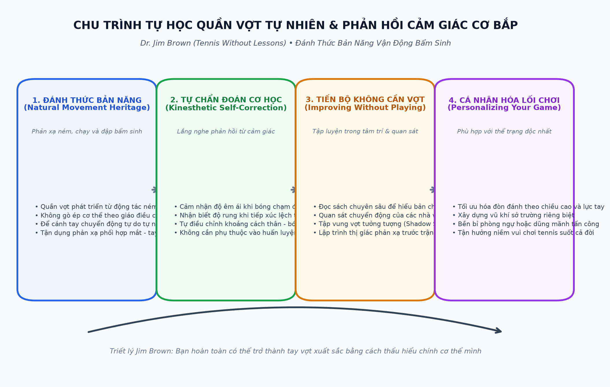
Chương 2: Luật Thành Văn & Văn Hóa Ứng Xử Bất Thành Văn (Court Etiquette)
Để được cộng đồng quần vợt đón nhận và tôn trọng, người chơi tự học cần nắm vững cả những quy tắc viết trong luật và những quy tắc ứng xử ngầm định trên sân:
| Tình Huống Trên Sân | Hành Vi Đúng Chuẩn (Etiquette) | Điều Tối Kỵ Cần Tránh |
|---|---|---|
| Bắt bóng chạm vạch biên (Line Calls) | Nguyên tắc tối thượng: bóng chạm dù chỉ một phần nghìn milimet mép vạch trắng vẫn là bóng trong sân. Nếu bạn không chắc chắn 100%, hãy luôn tính điểm cho đối phương. | Bắt bóng ra ngoài chỉ vì nghi ngờ hoặc muốn gỡ điểm trong những thời khắc nhạy cảm của trận đấu. |
| Quả bóng của sân bên cạnh lăn sang | Lập tức hô to "Let" để dừng điểm số bảo đảm an toàn cho mọi người, sau đó trả bóng lịch sự bằng cách nhẹ nhàng gạt bóng về phía cuối sân bên cạnh. | Cố đánh tiếp khi bóng đang lăn dưới chân, hoặc đập bóng trả lại một cách thô lỗ khi người sân bên đang thi đấu. |
| Thông báo tỷ số trận đấu | Người giao bóng luôn có nghĩa vụ hô to và rõ ràng tỷ số trận đấu trước mỗi lượt giao bóng (điểm của người giao bóng đọc trước). | Giao bóng âm thầm trong im lặng, dễ dẫn đến tranh cãi điểm số gay gắt khi trận đấu bước vào loạt tie-break. |
| Khởi động trước trận đấu | Khởi động nhẹ nhàng với mục đích giúp cả hai bên làm nóng cơ bắp và làm quen với mặt sân (đánh bóng thẳng vào tầm với của bạn chơi). | Cố tình tung ra những cú bạt bóng ăn điểm hoặc bỏ nhỏ ác ý ngay trong lúc đang khởi động. |
PHẦN 2: TỰ LÀM CHỦ CÁC CÚ ĐÁNH TỰ NHIÊN TRÊN SÂN ĐẤU
— Tiến sĩ Jim Brown
Chương 3: Chuẩn Bị Nền Tảng & Cú Thuận Tay Tự Nhiên (The Forehand)
Để tự xây dựng một cú thuận tay ổn định và uy lực mà không cần người chỉnh sửa từng milimet, Jim Brown khuyên người chơi tập trung vào ba mắt xích quan trọng nhất:
1. Xoay Vai Sớm Đồng Bộ
Ngay khi nhận biết bóng đang bay sang cánh phải, hãy lập tức xoay cả hai vai nghiêng vuông góc với lưới. Động tác xoay vai này tự động kéo cây vợt ra sau vị trí sẵn sàng mà không cần bạn phải bận tâm suy nghĩ về cánh tay.
2. Chạm Bóng Phía Trước Thân Người
Điểm tiếp xúc bóng lý tưởng luôn nằm ở phía trước hông trước khoảng 30 đến 40 centimet, tại độ cao ngang thắt lưng. Chạm bóng quá muộn sau thân người là nguyên nhân của 90% các cú đánh hỏng lệch hướng.
3. Kết Thúc Vợt Cao Qua Vai Đối Diện
Sau khi bóng rời mặt vợt, hãy để quán tính tự nhiên đưa đầu vợt vươn cao về phía mục tiêu và kết thúc thoải mái trên vai trái. Động tác kết thúc trọn vẹn này giúp phân tán xung lực an toàn và bảo vệ khớp khuỷu tay.
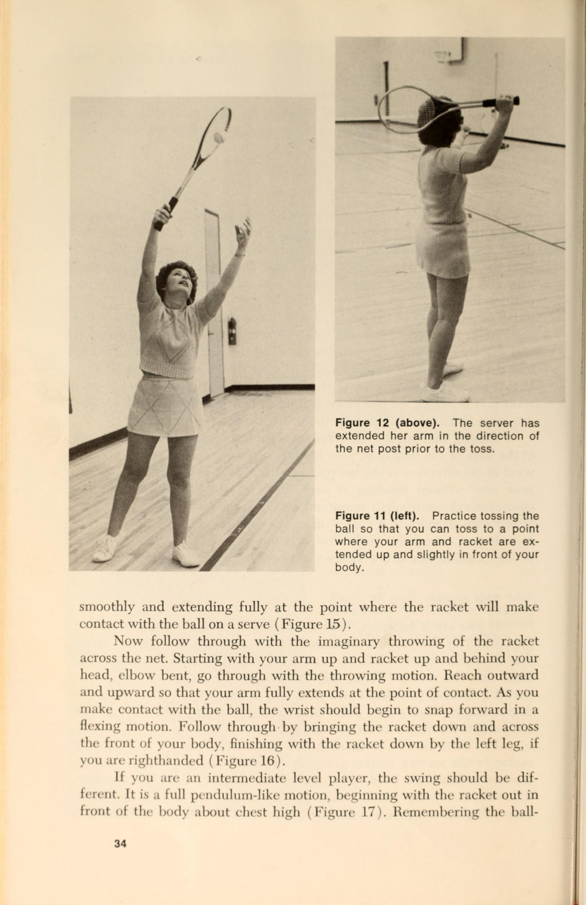
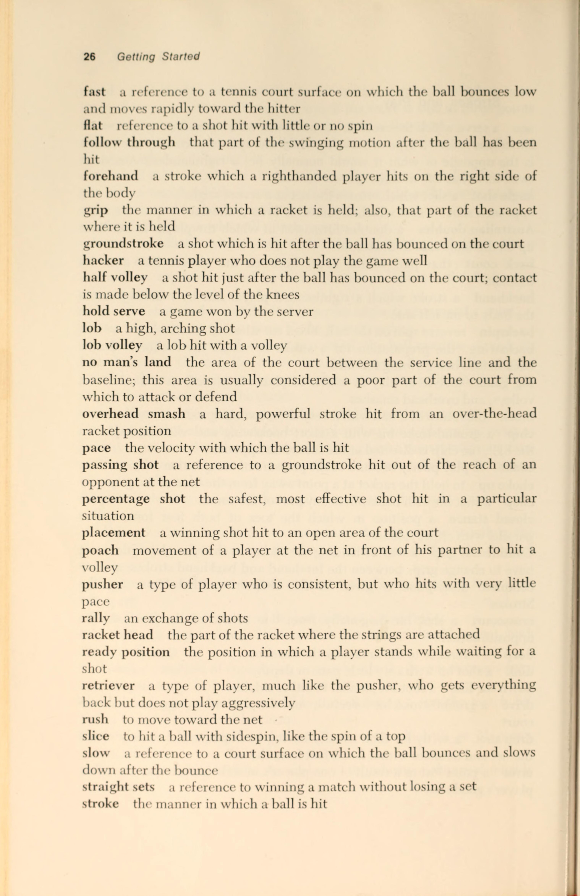
Chương 4: Cú Trái Tay Vững Chắc (The Backhand Stroke)
Nhiều người chơi tự học cảm thấy lúng túng với cú trái tay vì họ cố gắng sao chép động tác của cú thuận tay. Jim Brown nhấn mạnh rằng cú trái tay có cơ chế giải phẫu hoàn toàn khác biệt:
| Yếu Tố Kỹ Thuật | Trái Tay Một Tay (One-Handed) | Trái Tay Hai Tay (Two-Handed) |
|---|---|---|
| Kiểu Cầm Vợt | Cầm kiểu Miền Đông trái tay (Eastern Backhand), khớp ngón trỏ nằm trên đỉnh cạnh số 1 của cán vợt. | Tay thuận cầm kiểu Continental ở phía dưới, tay không thuận cầm kiểu Eastern thuận tay ở phía trên. |
| Độ Xoay Thân Người | Xoay vai sâu hơn, lưng trên hướng nhẹ về phía lưới trước khi vung vợt để nạp lực xoắn tối đa. | Xoay hông và vai đồng bộ, cơ thể duy trì sự vững chãi đối diện chéo với hướng bóng bay tới. |
| Điểm Tiếp Xúc Bóng | Chạm bóng rất sớm ở phía trước đầu gối trước, cánh tay duỗi thẳng hoàn toàn tạo thành đòn bẩy thép. | Chạm bóng gần cơ thể hơn một chút, tận dụng sức đẩy uy lực của cánh tay không thuận. |
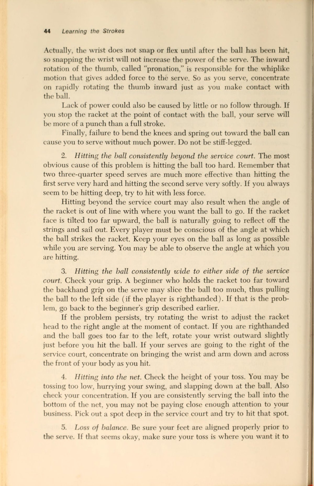
Chương 5: Cú Giao Bóng Tự Nhiên & Lối Đánh Trên Lưới (Serve & Net Play)
Theo Jim Brown, cú giao bóng không nên bị chia cắt thành hàng chục động tác rời rạc khiến người chơi bị tê liệt suy nghĩ. Hãy xem nó như một chuyển động ném bóng tự nhiên duy nhất:
- Cầm vợt kiểu Continental: Cầm vợt tự nhiên như đang cầm một chiếc búa để đóng đinh. Đây là kiểu cầm duy nhất cho phép cẳng tay xoay úp tự nhiên khi vươn tới Điểm tiếp xúc bóng cao nhất.
- Tung bóng như đặt vật quý: Nâng quả bóng lên bằng các đầu ngón tay với cánh tay duỗi thẳng mềm mại, đặt bóng vào một không gian tưởng tượng ở độ cao vừa tầm với của đầu vợt.
- Vung vợt hình chữ nhật: Để đầu vợt rơi tự nhiên ra sau lưng gáy như chuẩn bị gãi lưng, sau đó vươn người đạp đất đập bóng ở điểm cao nhất phía trước đầu.
Kỹ Thuật Bắt Volley & Đập Bóng Overhead
Trên lưới, nguyên tắc căn bản của Jim Brown là: Càng đơn giản càng hiệu quả.
- Cú Volley đấm ngắn: Không lấy đà ra sau. Chỉ cần giữ mặt vợt trước mặt, bước chân chéo về phía trước và dùng trọng lượng cơ thể chặn quả bóng lại.
- Cú đập bóng trên đầu (Overhead Smash): Ngay khi thấy bóng lốp bổng lên cao, hãy giơ tay trái chỉ thẳng vào bóng, dùng các bước trượt lùi lại phía sau và thực hiện cú ném bóng quen thuộc để kết liễu điểm số.
PHẦN 3: PHÁT TRIỂN CHIẾN THUẬT ĐÁNH ĐƠN, ĐÁNH ĐÔI & ĐÔI NAM NỮ
— Tiến sĩ Jim Brown
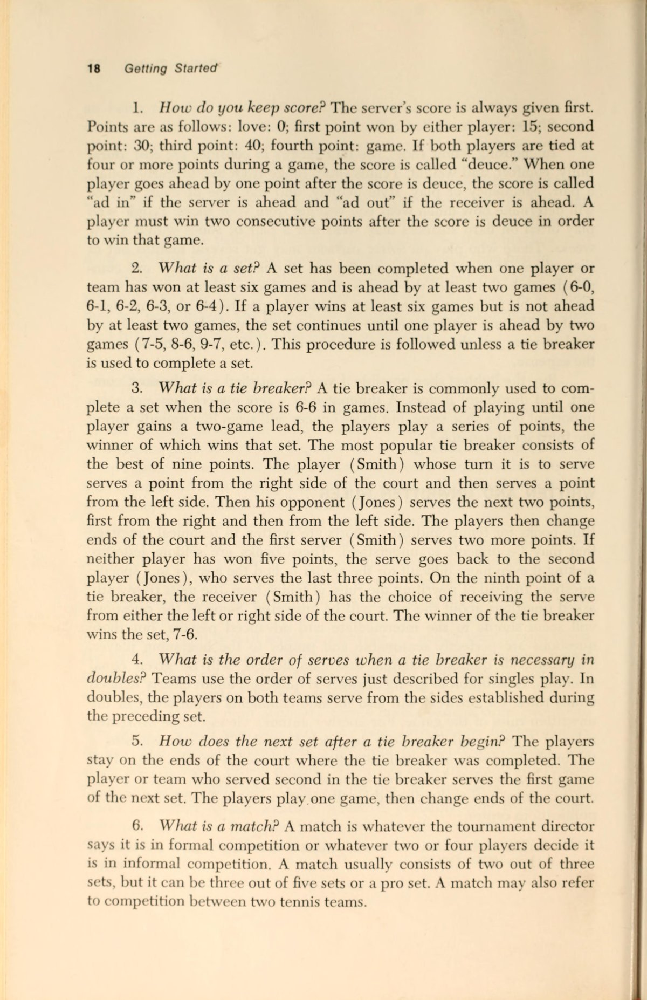
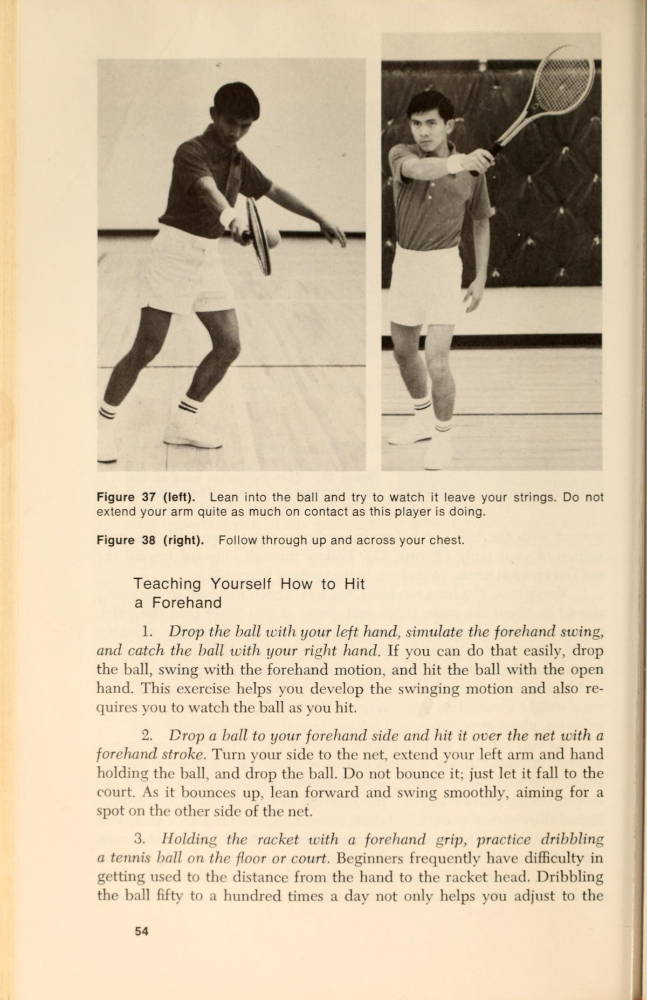
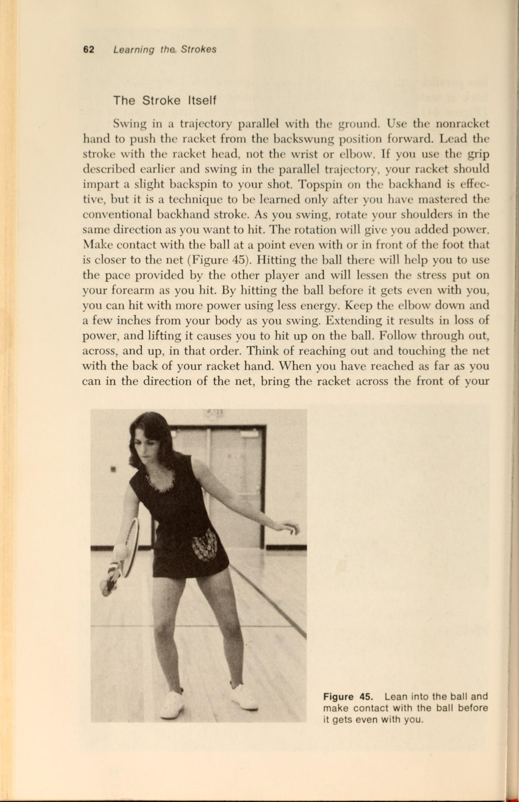
Chương 6: Chiến Thuật Đánh Đơn & Quản Lý Hình Học Sân Bãi
Trong đánh đơn, khoảng cách di chuyển giữa hai góc sân là rất lớn. Để giành chiến thắng mà không bị kiệt quệ thể lực, Jim Brown hướng dẫn các nguyên tắc hình học cơ bản:
1. Ưu Tiên Đường Bóng Chéo Sân (Crosscourt)
Đường chéo sân dài hơn đường thẳng dọc dây gần 2 mét (82.5 feet so với 78 feet), đồng thời quả bóng bay qua phần giữa lưới — nơi thấp nhất của lưới (3 feet so với 3.5 feet ở hai cột). Đánh chéo sân cho bạn biên độ an toàn cơ học cao nhất.
2. Tấn Công Vào Cú Đánh Yếu Hơn Của Đối Thủ
Hầu hết các tay vợt phong trào đều có một cánh yếu hơn rõ rệt (thường là cú trái tay). Hãy liên tục đưa bóng sâu vào cánh yếu của họ cho đến khi họ mất kiên nhẫn và tự đánh hỏng.
3. Thay Đổi Nhịp Độ & Độ Cao Quỹ Đạo
Đừng bao giờ đánh một loại bóng đều đều để đối thủ mượn lực. Hãy xen kẽ giữa một quả bóng nảy cao sâu cuối sân với một quả cắt bóng trượt thấp, ép đối phương phải liên tục thay đổi góc uốn cong đầu gối.
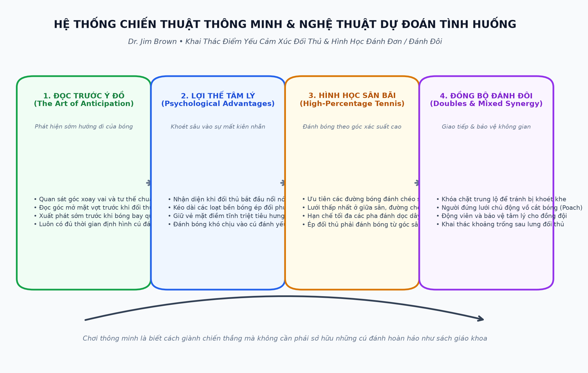
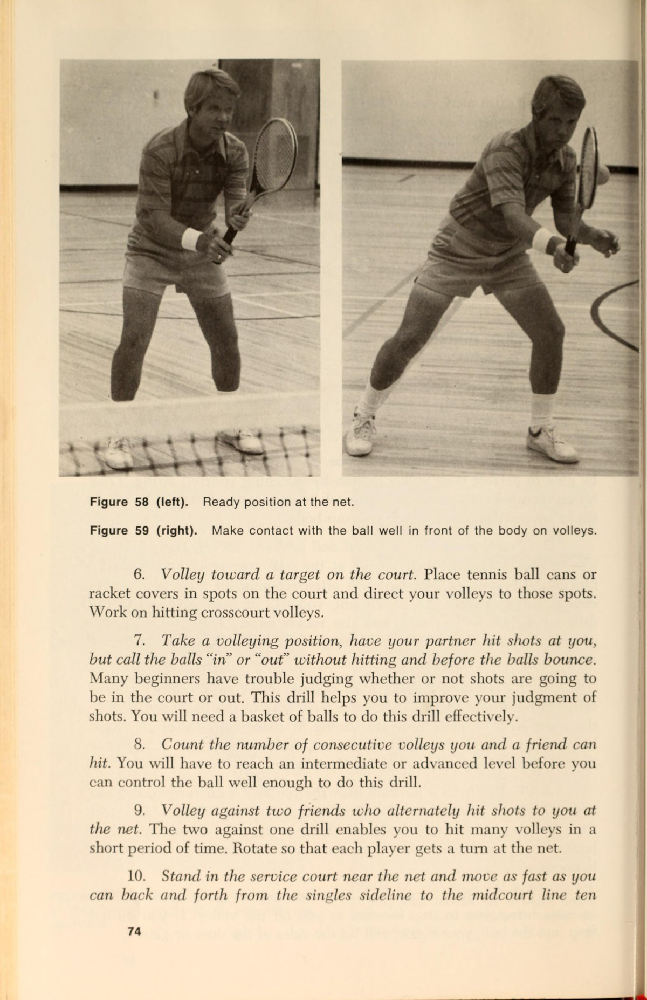
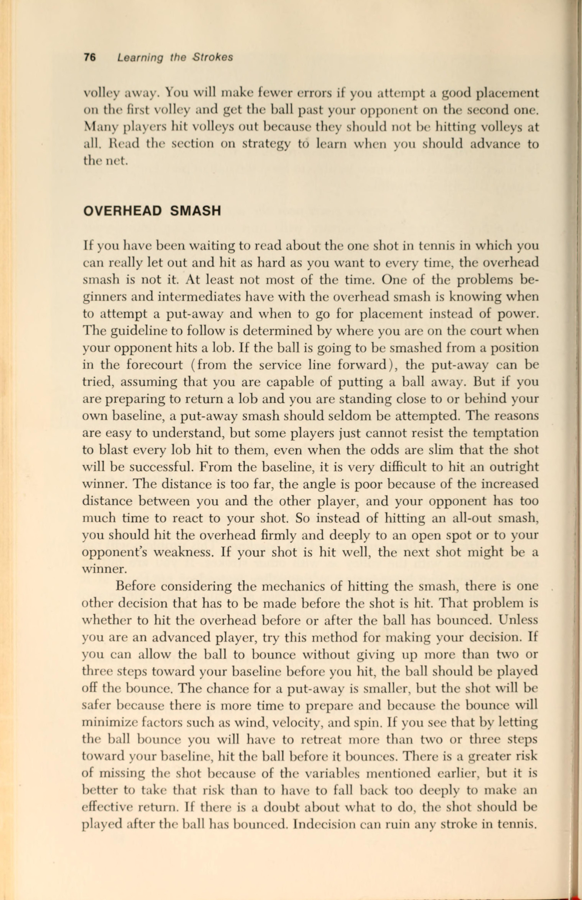
Chương 7: Chiến Thuật Đánh Đôi & Đôi Nam Nữ Thực Chiến
Đánh đôi là trò chơi của sự kiểm soát lưới và sự phối hợp đồng đội ăn ý. Jim Brown đúc kết các quy tắc vàng để làm chủ trận đánh đôi:
| Nhiệm Vụ Chiến Thuật Đôi | Hành Động Khuyến Nghị Của Jim Brown | Ý Nghĩa Tác Chiến |
|---|---|---|
| Bảo vệ khu vực trung lộ (The Middle) | Bóng bay vào giữa hai người thì tay vợt nào có cú thuận tay ở giữa sẽ có quyền ưu tiên đón bóng. | Xóa bỏ sự do dự nhường bóng hoặc va đập vợt vào nhau trong bối rối. |
| Vồ bóng trên lưới (Poaching) | Người đứng lưới chủ động lao chéo sang sân đối diện cắt quả bóng trả giao bóng của đối thủ. | Gây áp lực thị giác nghẹt thở, ép người trả giao bóng phải nhắm vào các góc hẹp rủi ro cao. |
| Đội hình đôi nam nữ (Mixed Doubles) | Tay vợt nam thường bao quát vùng rộng hơn và yểm trợ các quả lốp bóng bổng qua đầu, trong khi tay vợt nữ giữ vị trí lưới vững chắc. | Tối ưu hóa thể lực và sức mạnh của cặp đôi, tạo sự gắn kết chặt chẽ không có kẽ hở. |
PHẦN 4: CHƠI QUẦN VỢT THÔNG MINH, TIẾN BỘ KHÔNG CẦN RA SÂN & TỰ RÈN LUYỆN
— Tiến sĩ Jim Brown
Chương 8: Chơi Quần Vợt Thông Minh & Nghệ Thuật Khả năng đoán trước (anticipation)
Sự khác biệt giữa một tay vợt vụng về và một tay vợt chơi thanh thoát nằm ở khả năng Khả năng đoán trước (anticipation) (Anticipation). Người dự đoán giỏi không phải là người có đôi chân chạy nhanh nhất, mà là người xuất phát sớm nhất nhờ biết đọc các manh mối cơ học của đối phương:
1. Đọc Độ Mở Của Vai Đối Thủ
Nếu vai của đối phương mở sớm hướng thẳng về phía bạn, họ hầu như chắc chắn sẽ đánh bóng chéo sân. Nếu vai họ giữ đóng lâu hơn, cú đánh có xác suất cao là một đường bóng dọc dây.
2. Đọc Góc Mặt Vợt Trước Khi Chạm Bóng
Quan sát mặt vợt đối thủ khi bắt đầu vung xuống: nếu mặt vợt hạ thấp dưới bóng, đó sẽ là cú topspin cuộn cắm; nếu mặt vợt đưa cao ngang ngực với góc mở ngửa, họ đang chuẩn bị thực hiện cú cắt slice hoặc bỏ nhỏ.
3. Khai Thác Điểm Yếu Cảm Xúc Đối Phương
Khi thấy đối thủ bắt đầu nổi nóng, đập vợt hoặc thở dài, đừng bao giờ làm dịu trận đấu. Hãy tiếp tục đánh bóng sâu vào góc sân khó chịu nhất để đẩy họ vào sự sụp đổ tâm lý hoàn toàn.
Chương 9: Tiến Bộ Không Cần Cầm Vợt (Improving Without Playing)
Jim Brown là một trong những chuyên gia thể thao đầu tiên khẳng định tầm quan trọng của việc học tập gián tiếp ngoài sân đấu:
| Phương Pháp Ngoài Sân | Cách Triển Khai Hiệu Quả Nhất | Lợi Ích Đạt Được Khi Tái Xuất |
|---|---|---|
| Tiến bộ qua việc đọc sách (Reading) | Đọc các công trình lý luận sâu sắc để hiểu rõ bản chất vật lý và cơ sinh học của đòn đánh. | Hình thành tư duy logic vững vàng, không bị hoang mang trước những lời khuyên mâu thuẫn của bạn chơi. |
| Tiến bộ qua việc xem thi đấu (Watching) | Đừng chỉ xem quả bóng bay; hãy chọn một tay vợt hàng đầu và chỉ tập trung quan sát bộ chân cùng nhịp thở của họ giữa các điểm số. | Lập trình lại tiềm thức thị giác, giúp não bộ tự động bắt chước nhịp điệu vận động thanh thoát của các nhà vô địch. |
| Tập vung vợt tưởng tượng (Shadow Swings) | Thực hiện 100 cú vung vợt thuận tay và trái tay trước gương lớn mỗi ngày mà không cần bóng. | Khắc sâu đường vung vợt chuẩn mực vào bộ nhớ cơ bắp mà không bị phân tâm bởi việc bóng bay trúng hay trượt. |
| Bảo dưỡng thể lực & Phòng ngừa chấn thương | Tập tăng cường cơ cốt lõi (Core), kéo giãn cơ gân kheo và tập tạ nhẹ cho các nhóm cơ chóp xoay vai (Rotator Cuff). | Duy trì sự bền bỉ dẻo dai, bảo vệ các khớp xương và kéo dài tuổi thọ chơi thể thao thêm hàng chục năm. |
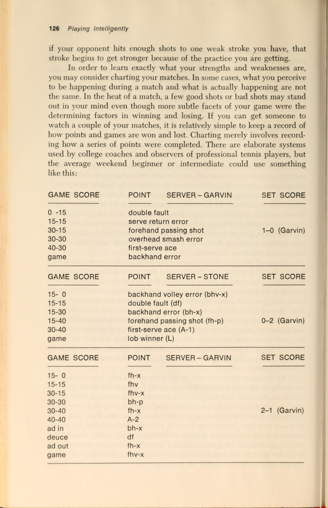
Chương 10: Xây Dựng Kế Hoạch Tự Rèn Luyện Suốt Cả Cuộc Đời
Tiến sĩ Jim Brown khép lại cuốn sách bằng một lời khuyên chân thành dành cho mọi người yêu thể thao:
- Hãy là người thầy tốt nhất của chính mình: Đừng bao giờ hoảng loạn khi mắc lỗi. Sau mỗi cú đánh hỏng, hãy tự hỏi: "Mình đã chạm bóng ở đâu? Trước người hay sau người? Mặt vợt lúc đó mở hay đóng?". Khi bạn tự trả lời được những câu hỏi đó, bạn đã nắm trong tay chìa khóa để làm chủ cuộc chơi.
- Cá nhân hóa phong cách thi đấu: Đừng cố gắng trở thành bản sao của bất kỳ ai. Hãy xây dựng một lối chơi tôn trọng thể trạng, sở thích và tính cách độc nhất của chính bạn.
- Giữ gìn niềm đam mê thuần khiết: Chiến thắng là điều tuyệt vời, nhưng niềm vui được vận động, được hít thở bầu không khí trong lành trên sân và tình bạn gắn kết sau trận đấu mới là những giá trị trường tồn theo năm tháng.